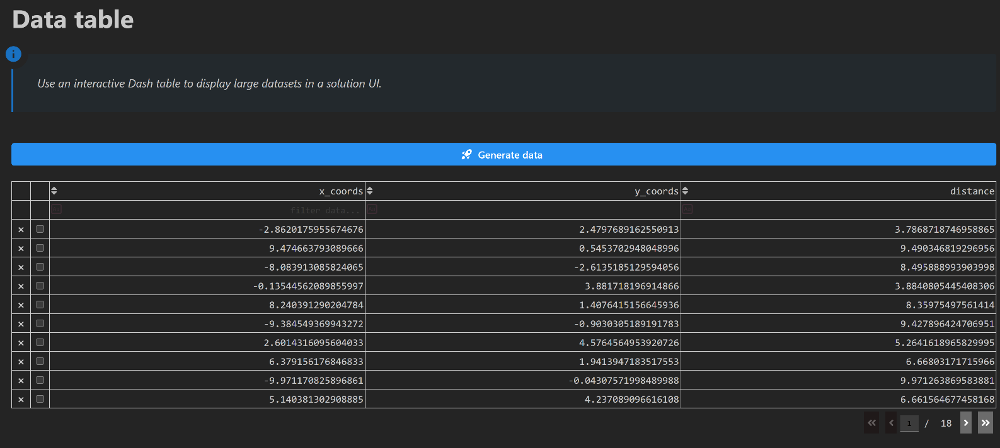

Data tables#
Feature highlight#
The user interface (UI) of a solution app can display both input data (such as strings, integers, floats, and files) and output data (such as tables, 1D/2D/3D graphics, 3D viewers, and images).
As a solution developer, you must know how to present large datasets in the UI. A table is the most convenient component for this purpose because it remains readable as the number of rows grows.
In this example, you learn how to:
Write business logic that generates a dataset with NumPy.
Store the dataset in a typed step field and expose a transaction method that generates it.
Render the dataset with a Dash
DataTablecomponent and enable sorting, filtering, and pagination.Wire a callback so a button click triggers the backend computation and populates the table.
When you complete this example, you can expect the following output in the solution UI:
{kind=link}

Prerequisites#
To render data in a table, you need the dash.dash_table.DataTable component from Dash. For more information, see the Plotly Dash DataTable documentation.
Coding#
To display a dataset in an interactive table, work through the following sequence of sections.
Logic#
Write the business logic.
Key concept — Business logic
Business logic is plain Python: it has no dependency on SAF and can be developed and tested on its own before it is wired into a step.
Generate the data
In the solution/logic folder, the table_logic.py module exposes a
generate_table_data function that returns the dataset as a dictionary of columns.
def generate_table_data(points: int = 30) -> dict[str, Any]:
"""Compute the data for the table."""
t = np.linspace(-6, 6, points)
x_s = 10 * np.sin(9.9 * t) * np.round(np.sqrt(np.cos(np.cos(10 * t))))
y_s = 9 * np.cos(9.9 * t) ** 2 * np.sin(np.sin(10 * t))
x, y = np.empty(0), np.empty(0)
for alpha in np.linspace(0, 360, 6):
alpha = np.radians(alpha)
x = np.append(x, x_s * np.cos(alpha) + y_s * np.sin(alpha), axis=0)
y = np.append(y, -x_s * np.sin(alpha) + y_s * np.cos(alpha), axis=0)
d = np.sqrt(x**2 + y**2)
data_dict = {"x_coords": x.tolist(), "y_coords": y.tolist(), "distance": d.tolist()}
return data_dict
Backend#
Create the solution definition.
Key concept — Typed field
A field is a class attribute with a type annotation and a default value. SAF uses
the annotation to persist the field, expose it through the REST API, and surface it to
the frontend through the DashClient.
Define the step fields
Declare a data_dict field that holds the generated dataset and a table_flag field
that tells the frontend whether the dataset is available.
result_files: list[EntityHandle] = []
log_file: EntityHandle = NO_ENTITY
# Table data
data_dict: dict[str, Any] = {}
table_flag: bool = False
Key concept — Transaction method
A transaction method is the only place where step fields are read and written. Any
method that touches a field must be decorated with @transaction, which declares the
fields it downloads (reads) and uploads (writes) through its StepSpec.
Add a transaction method to generate the data
Create a generate_data transaction method that invokes the generate_table_data
business logic function and stores the result in the step fields.
@transaction(self=StepSpec(upload=["data_dict", "table_flag"]))
def generate_data(self) -> None:
"""Generate the data of the table and store it in the ``data_dict`` field."""
data_dict = generate_table_data()
self.data_dict = data_dict
self.table_flag = True
Important
This example deliberately uses a blocking transaction method rather than a long-running one. The business logic was tested beforehand and generates the dataset in less than a second, so blocking the UI for that duration is safe and keeps the code simpler.
Nothing prevents you from converting it to a long-running transaction method by adding
the @long_running decorator if your own computation takes longer. For more
information, see Long-running transaction streaming events.
Frontend#
Expose the solution definition in the UI.
Create the page layout
In the ui/pages folder, the layout function of the page adds a dmc.Button that
triggers the data generation and an empty html.Div that hosts the table once the data
is available.
def layout() -> html.Div:
"""
Build the layout of the data table page.
The layout holds a button that triggers the generation of the dataset and an empty
container that is filled with the table once the data is available.
Returns
-------
html.Div
Content of the page.
"""
return html.Div(
[
html.H1("Data table", className="display-3", style={"font-size": "40px", "font-weight": "bold"}),
dmc.Blockquote(
"Use an interactive Dash table to display large datasets in a solution UI.",
icon=DashIconify(icon="material-symbols:info", width=30),
style={"font-size": "18px", "fontStyle": "italic"},
),
html.Br(),
html.Br(),
dmc.Button(
"Generate data",
id="generate-data-button",
leftSection=DashIconify(icon="streamline:startup-solid"),
radius="sm",
disabled=False,
className="mantine-button",
style={
"font-size": "16px",
"width": "100%",
"background-color": "#2790F1",
},
),
html.Br(),
html.Br(),
html.Div(id="data-table"),
],
style={"paddingLeft": "20px"},
)
Key concept — Table styling
The DataTable component exposes a dedicated style property for each part of the
table, such as style_header, style_data, and style_filter. For more
information, see the Plotly Dash
Styling the DataTable documentation.
Build the table
The _create_data_table function converts the data_dict step field into a pandas
DataFrame and builds the DataTable from it. Sorting, filtering, row selection, row
deletion, and pagination are enabled through the options of the component. When
table_flag is False, the function returns an empty html.Div so that nothing is
displayed before the data is generated.
def _create_data_table(project: ExamplesSolution) -> html.Div:
"""
Build the Dash table from the data stored in the step.
The dataset is converted into a pandas ``DataFrame`` so that the columns of the table
can be derived from it. Sorting, filtering, row selection, row deletion, and pagination
are enabled, and the colors of the table follow the Mantine theme of the solution.
Parameters
----------
project : ExamplesSolution
Solution instance holding the step with the dataset.
Returns
-------
html.Div
Container with the ``DataTable`` component, or an empty container if the dataset
has not been generated yet.
"""
step = project.steps.basic_step
if step.table_flag:
df = pd.DataFrame(step.data_dict)
table_atti = html.Div(
[
dash_table.DataTable(
data=df.to_dict("records"),
columns=[{"name": i, "id": i} for i in df.columns],
id="id_data_table",
editable=True,
filter_action="native",
sort_action="native",
sort_mode="multi",
column_selectable="single",
row_selectable="multi",
row_deletable=True,
selected_columns=[],
selected_rows=[],
page_action="native",
page_current=0,
page_size=10,
style_filter={
"color": "var(--mantine-color-text)",
"background-color": "var(--mantine-color-body)",
},
style_header={
"color": "var(--mantine-color-text)",
"background-color": "var(--mantine-color-body)",
},
style_data={"color": "var(--mantine-color-text)", "background-color": "var(--mantine-color-body)"},
),
],
)
else:
table_atti = html.Div("")
return table_atti
Key concept — Callback
A callback is a Dash-decorated function that fires in response to a UI event. In a
SAF solution, callbacks reach the backend through project.steps.<step_name>, read or
write fields, and invoke transaction methods — no manual HTTP calls needed.
Trigger the backend computation from the frontend
Write a callback that invokes generate_data when the button is clicked and returns the
table built from the newly generated data.
@callback(
Output("data-table", "children"),
Input("generate-data-button", "n_clicks"),
State("url", "pathname"),
prevent_initial_call=True,
)
def create_table_data(n_clicks: int, project: ExamplesSolution) -> html.Div:
"""
Generate the dataset and display it in a table.
Parameters
----------
n_clicks : int
Number of times the generation button has been clicked.
project : ExamplesSolution
Solution instance injected by the ``DashClient`` from the URL of the page.
Returns
-------
html.Div
Container holding the table built from the newly generated dataset.
"""
step = project.steps.basic_step
if n_clicks >= 1:
step.generate_data()
return _create_data_table(project)
Now that your implementation is complete, continue to the Testing section.
Testing#
Finally, test your implementation to confirm it works as expected.
Run the solution and compare your results with the results shown in the Feature highlight section.